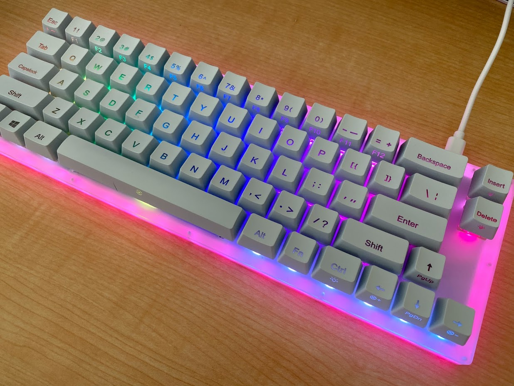
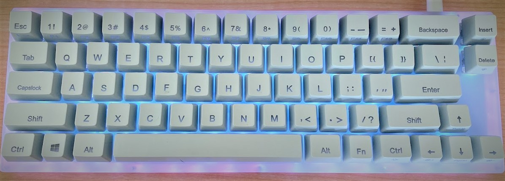
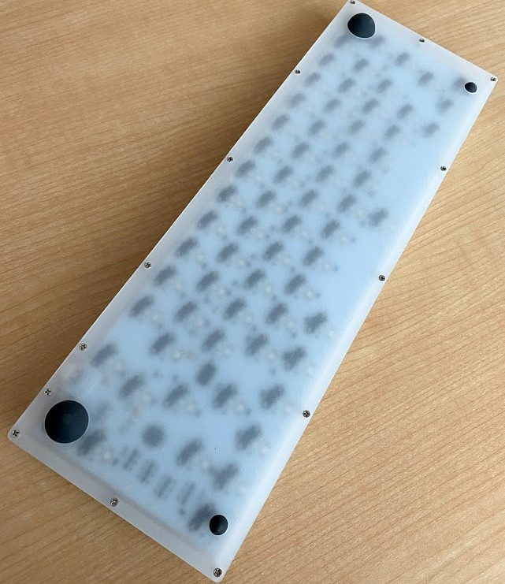
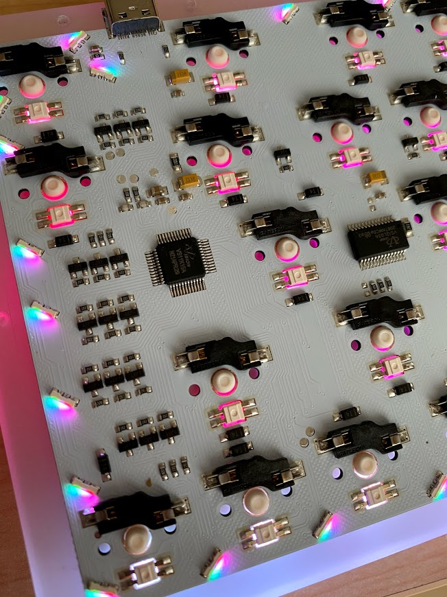
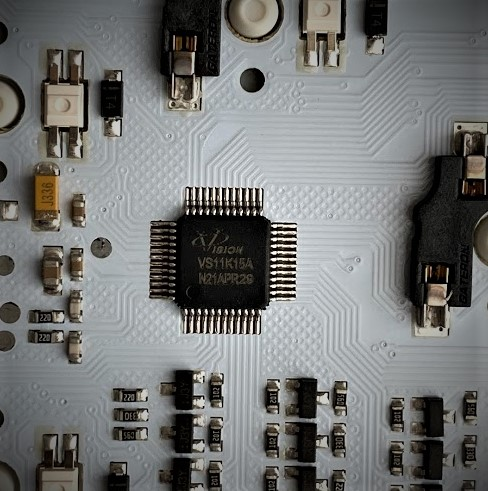
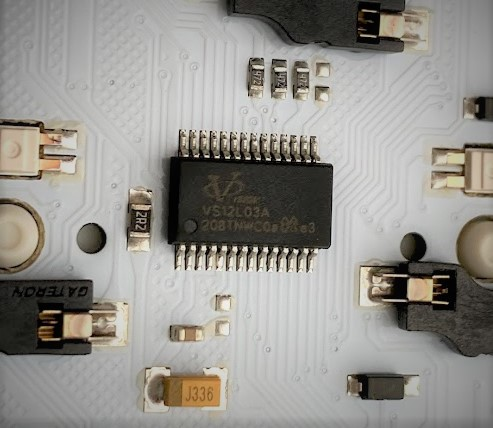

この記事はBanggoodの提供でお届けします。
以前紹介したようにこのブログはBanggoodと提携させていただいており、今回紹介するGamaKay K66はBanggoodからいただいたものとなります。GamaKay K66のレビューがしたい！と言ったのは自分なので、Banggoodが無理やりこの商品を押しているわけではなく、inajobの一押しアイテム！、という感じです。）
・・・ といういつもの前置きはそこそこに、GamaKay K66について紹介していきます。
そして、今回もこのブログのために2021/08/31まで利用できるクーポンを頂くことが出来たので、そちらも紹介します。
GamaKay K66 とは
ここ最近「自作キーボード」が流行っていますが、「組み立て済み」が欲しい人も多いでしょう。
この記事で紹介しているGamaKay K66は組み立て済みの66キーのメカニカルキーボードです。

スペックは以下です。
-
US配列
-
Gateronのキーボードスイッチ （軸はBlack/Blue/Brown/Red/Yellowから選べる）
-
キーボードスイッチがホットスワップできる
-
キースイッチごとのフルカラーLED搭載
-
USB Type-C接続
- 無線接続機能はありませんが、技適の問題を考えると有線のみのほうが都合が良いです。
-
アクリルプレートをサンドイッチした筐体
-
文字部分が透明のABS樹脂製のキーキャップ
キーボードスイッチ
自作キーボード界隈ではCherry MXというキーボードスイッチが有名ですが、この機種に搭載されているGateronはCherry MXのものの代用として有名なものです。
自分はキーボードスイッチソムリエではないので、このキーボードスイッチがどの程度良いものかの評価は難しいですが、特に不満なく利用できています。
ホットスワップに対応しているため、別にキーボードスイッチを買いそろえることで、はんだ付けすることなくキーボードスイッチを変更することが出来ます。
キー配列

このキーボードは66キーのキーボードスイッチを持っています。私がこのキーボードを選んだのはいくつかの理由があります。
- BackSpaceキーが角にある
- 組み合わせキーなしでカーソル操作ができる
- コンパクトな配列
他の60%代のキーボードは結構この要件を満たしません。特にカーソルキーについては省略されてしまっているものが多いです。80%にするとこの問題は解決しますが、キーボードが全体的に一回り大きくなってしまいます。
そういうわけで、このGamaKay K66はちょうど良い配列だったため今回のレビュー対象としました。
（本当はJP配列のほうが好きなんですが、海外通販では扱いが無く、仕方なくUS配列にしました）
不満
このキーボードはよくできているのですが、「キーカスタマイズができない」というのがちょっと不満です。 と言ってもOS内のユーティリティでキーを変更することはできるので、まぁそれでも良いのですが・・
特にバッククォートとチルダの付いたキーが存在しないのが困りどころで、これは何とかしたいです（EscキーとFnで打てます）。
とはいっても、このキーボードのコアとなるCPUは汎用品なので、うまい事ファームウェアを書き換えればカスタマイズすることはできそうですが、公式の手段が用意されていないので、なかなかハードルが高そうです。
分解してみる
ここまでで、一般的なレビューは終わりです。
ここからは私の知的好奇心でこのキーボードを分解してみた結果を紹介します。
たくさんのネジ
このキーボードは金属製のパネルを使わず、アクリル樹脂をサンドイッチして筐体が構成されています。個人的には、特に金属ではないからと言って強度に問題があるようには思いませんでした。
このアクリル樹脂を固定するためのネジが14個あり、これをすべて緩めることで分解できます。

ネジ穴は一番上のアクリル板をタッピングして掘られており、あまり何度も開け閉めするとネジ穴が劣化してしまいそうと感じました。ちゃんと作るならインサートナットとかを使うのが良いのかな？と思いました。（とはいえ、頻繁に分解しなければ困ることはなさそうです）
フルカラーLED
フルカラーLEDは周辺を囲うように配置されているものと、キースイッチごとに配置されているものの2種類があり、それぞれ違う種類の部品のようです。

周辺を囲っているのは、細長い小さなフルカラーLEDで、あまり見たことのない横向きに光るLEDです。ちょっと大きさが違うように見えますが、SK6812Sideが近そうです。
キースイッチごとに配置されているフルカラーLEDはその形から、SK6812MINIのように見えます。
IC部品
2つのIC部品が搭載されているのが見えます。
マイコンはATMegaかSTM32かと思っていたのですがアテが外れました。
VS11K15A N21APR29 という刻印のIC
http://www.eevision.com/product/detail/96.html
どうやらこれはメカニカルキーボードに特化したCotex-M0のチップのようです。USB HID Deviceのインターフェースを備え、48MHzのクロックで動作し、32KのROMを搭載しています。

このICにキーボード用のファームウェアが焼かれているようです。周辺に何か所かパッドが存在するので、それらをうまく利用すると中身を書き換えできるかもしれません。
調べてみると、これはSN32F268FというICを元としたもののようです。（ https://github.com/SonixQMK/Mechanical-Keyboard-Database/blob/f0a97917150c421d87e53f392d84eabcad30e0ea/chips.md#sonix-sn32-based-chips ）
VS12L03A 208TNWCOa??e3 という刻印のIC

こちらはLEDドライバのようです。ぱっと見はシリアル接続のフルカラーLEDではなく、単なるLEDをマトリクスで制御するの物ように見えます。明るさの制御に使っているのでしょうか？
その他部品
ホットスワップするためのソケットも「Gateron」と刻印されたものでした、またキーボードスイッチの周辺に小型のダイオードが存在し、同時押ししたときにファントムキーが出ないように対策されているようです。
また15個のトランジスタと思われる部品が固まって存在しており、これはLED駆動のためのものかなと思います。
分解まとめ
マイコンがちょっと聞きなれないものであることを除いては、一般的な「自作キーボード」と同じような構成であることがわかりました。マイコンが特殊であるため、自作キーボードのために作られたキーボードファームウェアを利用するにはかなりハードルが高そうです。
ファームウェア改造の手がかり
https://wormier-docs.github.io/ このページのキーボードがどうやら同じもののようで、この手法応用するとファームウェアを改造できるようです。
この記事通りであれば、特別に配線を引き出さずともUSB接続してあれば、ファームウェアを書き換えできるように見えます。
QMKという自作キーボード向けファームウェアも https://github.com/smp4488/qmk_firmware/tree/chibios-upgrade/keyboards/womier/k66や https://github.com/toastdb/qmk_firmware/tree/womier_k66 に移植された実装があるように見えます（絶賛開発中のようですが・・）。
もう少し見たころ https://github.com/smp4488/qmk_firmware/tree/chibios-upgrade/keyboards/womier/k66 が元祖で、このソースコードだとLEDの点灯が未サポートですが、キーボードとしてはちゃんと使うことが出来るようで、もう一つの https://github.com/toastdb/qmk_firmware/tree/womier_k66 のほうが、これを基にしてさらなる改良を加えているもののようです。
ファームウェアを誤って書き込むと、最悪の場合キーボードが機能しなくなって書き換えもできなくなってしまい、いわゆる「文鎮化」してしまう可能性があるので、試す際は自己責任でお願いします。
まとめ
メカニカルキーボードは気になるけど、自作するのはちょっと・・という人に向いている製品だと思います。ホットスワップに対応しているため、キーボードスイッチを好きなものに変更したり、キーキャップを取り換えたりというカスタマイズも楽しむことが出来ます。
キー配列も個人的には好みです。
一方キーカスタマイズなどを考えている人にとっては、ちょっとハードルの高い商品となっています。腕に覚えのある方は、あえて挑戦してみるというのも面白いと思います。
クーポンコード
さて、ここまで紹介してきたGamaKay K66ですが、今回Banggoodの提供という事で、$57.99で購入できるクーポンを頂いています。
コード： BGCNK66JP (8/31まで)
GamaKay K66をカートに入れ、チェックアウト後にこのクーポンコードを入力することで割引を受けることが出来ます。
有効期限は2021/08/31なので、買いたい方はお早めにどうぞ！（加えて、在庫に限りがあると思うのでお早目に！）


関連記事